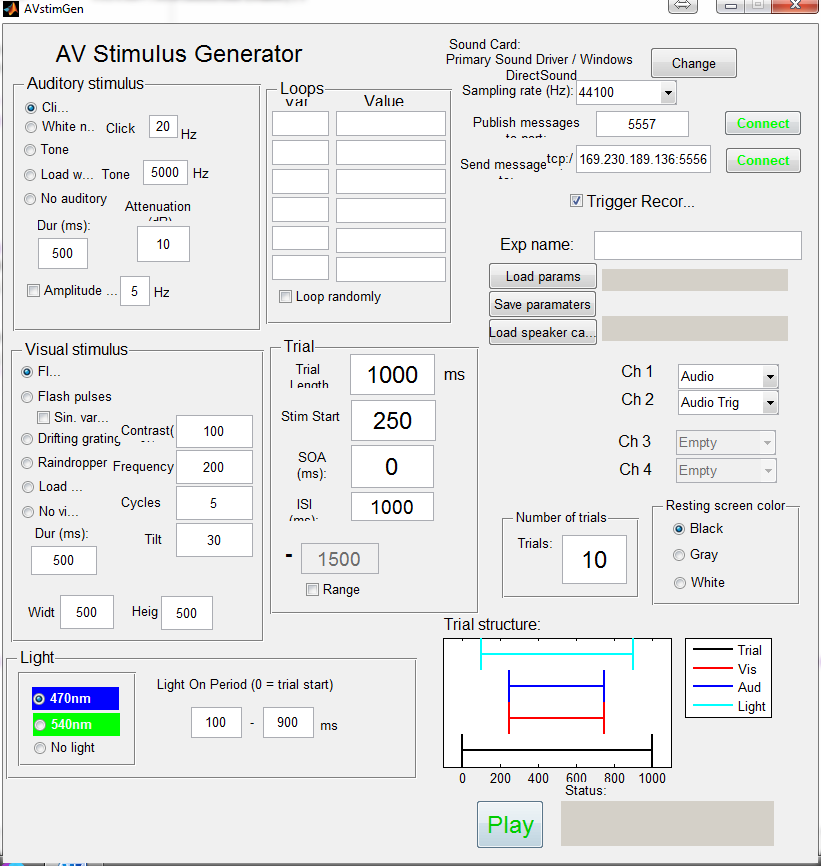

function varargout = AVstimGen(varargin) % AVSTIMGEN % GUI for Audio Visual Stimulus Generation % Dependencies: % PsychToolbox V3 % zeroMQ bindings for MATLAB (for inter-computer communication) % % Ryan Morrill, 2014 % Last Modified by GUIDE v2.5 02-Feb-2015 11:40:35 % Begin initialization code - DO NOT EDIT gui_Singleton = 1; gui_State = struct('gui_Name', mfilename, ... 'gui_Singleton', gui_Singleton, ... 'gui_OpeningFcn', @AVstimGen_OpeningFcn, ... 'gui_OutputFcn', @AVstimGen_OutputFcn, ... 'gui_LayoutFcn', [] , ... 'gui_Callback', []); if nargin && ischar(varargin{1}) gui_State.gui_Callback = str2func(varargin{1}); end if nargout [varargout{1:nargout}] = gui_mainfcn(gui_State, varargin{:}); else gui_mainfcn(gui_State, varargin{:}); end % End initialization code - DO NOT EDIT % --- Executes just before AVstimGen is made visible. function AVstimGen_OpeningFcn(hObject, eventdata, handles, varargin) % This function has no output args, see OutputFcn. % hObject handle to figure % eventdata reserved - to be defined in a future version of MATLAB % handles structure with handles and user data (see GUIDATA) % varargin command line arguments to AVstimGen (see VARARGIN) % Choose default command line output for AVstimGen handles.output = hObject; % because there seems to be a weird bug: % figHandles = get(0, 'Children'); % if numel(figHandles)>1 % close(figHandles(1), 'force'); % end % CHECK FOR PSYCHTOOLBOX verTex = PsychtoolboxVersion; if str2num(verTex(1)) < 3 errordlg('You are running psychtoolbox lower than v3 and this software aint gonna work.'); end % set close function %figure('CloseRequestFcn', @cleanup_fun) InitializePsychSound(1); %get sound driver, look for ASIO devs = PsychPortAudio('GetDevices'); handles.ASIOind = find(~cellfun(@isempty, regexp({devs.DeviceName}, 'ASIO')))-1; % -1 because 0-indexed if isempty(handles.ASIOind) % errordlg('ASIO device may not have been found, may have latency issues', ... % 'ASIO device error'); % so get the default driver pahandle = PsychPortAudio('Open'); status = PsychPortAudio('GetStatus', pahandle); currdev = PsychPortAudio('GetDevices', [], status.OutDeviceIndex); else currdev = devs(handlesASIOind); end set(handles.soundcard_text, 'String', [currdev.DeviceName ' / ' currdev.HostAudioAPIName]); switch currdev.NrOutputChannels case 1 set([handles.ch2_popup, handles.ch3_popup, handles.ch4_popup], 'Value', 5); % vaue 5 = 'Empty' set([handles.ch2_popup, handles.ch3_popup, handles.ch4_popup], 'Enable', 'off'); case 2 set([handles.ch3_popup, handles.ch4_popup], 'Value', 5); set([handles.ch3_popup, handles.ch4_popup], 'Enable', 'off'); case 3 set(handles.ch4_popup, 'Value', 5); set(handles.ch4_popup, 'Enable', 'off'); case 4 end handles.SOA = str2double(get(handles.SOA_edit, 'String')); handles.trialLen = str2double(get(handles.trial_len_edit, 'String')); handles.stimStart = str2double(get(handles.stim_start_edit, 'String')); handles.visDur = str2double(get(handles.dur_vis_edit, 'String')); handles.audDur = str2double(get(handles.dur_aud_edit, 'String')); handles.lightStart = str2double(get(handles.light_start_edit, 'String')); handles.lightStop = str2double(get(handles.light_stop_edit, 'String')); handles.light = ~strcmp(get(get(handles.light_panel, 'SelectedObject'), 'String'), 'No light'); handles.aud = ~strcmp(get(get(handles.aud_stim_panel, 'SelectedObject'), 'String'), 'No auditory'); handles.vis = ~strcmp(get(get(handles.vis_stim_panel, 'SelectedObject'), 'String'), 'No visual'); % for keeping track of expts AVstimDir = which('AVstimGen'); AVstimDir = AVstimDir(1:end-11); handles.AVstimDir = AVstimDir; logfile = 'StimLog_do_not_edit.mat'; cd(AVstimDir) d = dir(AVstimDir); if ~isempty(find(strcmp(logfile, {d.name}),1)) load(logfile) else errordlg([logfile ' NOT FOUND. Will generate new logfile and save in ' AVstimDir '. To overwrite this, restart program with correct logfile in this directory.']); lastexpdate = datestr(now, 'yy-mm-dd-HHMM'); lastexpno = 1; save(logfile, 'lastexpdate', 'lastexpno'); end handles.lastexpdate = lastexpdate; handles.lastexpno = lastexpno; handles.send_messages = 0; handles.pub_messages = 0; plotTrialStruct(handles); % Update handles structure guidata(hObject, handles); % UIWAIT makes AVstimGen wait for user response (see UIRESUME) % uiwait(handles.figure1); % --- Outputs from this function are returned to the command line. function varargout = AVstimGen_OutputFcn(hObject, eventdata, handles) % varargout cell array for returning output args (see VARARGOUT); % hObject handle to figure % eventdata reserved - to be defined in a future version of MATLAB % handles structure with handles and user data (see GUIDATA) % Get default command line output from handles structure varargout{1} = handles.output; % --- Executes on button press in play_button. function play_button_Callback(hObject, eventdata, handles) % hObject handle to play_button (see GCBO) % eventdata reserved - to be defined in a future version of MATLAB % handles structure with handles and user data (see GUIDATA) if ~handles.send_messages & ~handles.pub_messages msg_quest_ans = questdlg('Warning: no TCP connection established for network event messages. Proceed?', 'Connection warning', 'Yes', 'No', 'Yes'); drawnow; pause(0.05); if strmatch(msg_quest_ans, 'No') return end end if ~isfield(handles, 'tcp_handle') handles.tcp_handle = []; end if ~isfield(handles, 'pub_socket'); handles.pub_socket = []; end handles.random_loop = get(handles.random_loops_check, 'Value'); [vars_loop vals_loop] = queryLoopsBox(handles); if isempty(vars_loop) && isempty(vals_loop) params.loop_mode = 0; params.trial_seq_msg = []; elseif isempty(vars_loop) ~= isempty(vals_loop) || length(vars_loop) ~= size(vals_loop,2) errordlg('Problem - check loop box. Does every var have a corresponding val and vice versa?'); return else params.loop_mode = 1; end cyc = str2double(get(handles.cycles_edit, 'String')); num_combs = size(vals_loop,1); if ~isempty(vars_loop) if cyc < num_combs cyc = char(inputdlg(['Input loop values require min ' num2str(size(vals_loop,1))... ' trials for all combinations. Value entered in Nr. of Trials box is ' ... num2str(cyc) '. Confirm desired number of trials here:'], 'Confirm nr trials', 1)); elseif mod(cyc, num_combs) ~= 0 cyc = char(inputdlg(['Input loop values should be a multiple of ' num2str(size(vals_loop,1))... ' for even presentation of all combinations. Value entered in Nr. of Trials box is ' ... num2str(cyc) '. Confirm desired number of trials here:'], 'Confirm nr trials', 1)); end if isempty(cyc) disp('Error: No input given, returning. Try again.'); return end if ischar(cyc) % indicates cyc has been changed by dlg box set(handles.cycles_edit, 'String', cyc); cyc = str2double(cyc); end if cyc>num_combs % expand vars_loop to fit requested size vals_loop_temp = repmat(vals_loop, floor(cyc/num_combs), 1); m = mod(cyc, num_combs); vals_loop = [vals_loop_temp; vals_loop(1:m,:)]; if size(vals_loop,1) ~= cyc % sanity check error(' AVstimGen: mismatch between requested cycles and vars_loop size'); end elseif cyc<num_combs % if smaller take the first n param combinations, n = cyc fprintf('\nFewer cycles than number of stim combinations. Taking the first %d \n', cyc); vals_loop = vals_loop(1:cyc,:); end if handles.random_loop && ~isempty(vals_loop) rand_ind = randperm(length(vals_loop)); vals_loop = vals_loop(rand_ind,:); end end if params.loop_mode msg_content = ''; for i = 1:numel(vars_loop) %msg_content = [msg_content vars_loop{i} ' ' repmat(num2str(vals_loop(:,i)'), 1, floor(cyc/size(vals_loop,1))) vals_loop(1:mod(cyc,size(vals_loop,1))) ' ']; msg_content = [msg_content vars_loop{i} ' ' num2str(vals_loop(:,i)') ' ']; end params.trial_seq_msg = ['TrialSeq ' msg_content]; params.var_list = vars_loop; params.stim_vals = vals_loop; end % Loop-able values will be: % SOA % ISI % stim_start % audio_dur % audio_freq % audio_atten % light loop_SOA = strmatch('SOA', vars_loop, 'exact'); loop_ISI = strmatch('ISI', vars_loop, 'exact'); loop_stim_start = strmatch('stim_start', vars_loop, 'exact'); loop_audio_dur = strmatch('audio_dur', vars_loop, 'exact'); loop_audio_freq = strmatch('audio_freq', vars_loop, 'exact'); loop_audio_atten = strmatch('audio_atten', vars_loop, 'exact'); loop_light_on = strmatch('light_on', vars_loop, 'exact'); loop_light_off = strmatch('light_off', vars_loop, 'exact'); loop_light = strmatch('light', vars_loop, 'exact'); % loop_audo_click_freq = strmatch('audio_click_freq', vars_loop); % PARAMS params.expt_name = get(handles.exp_name_edit, 'String'); params.cycles = cyc; % two ways to get variable ISIs: loop box and checkbox for range ISI if ~isempty(loop_ISI) params.ISI = vals_loop(:,loop_ISI); elseif get(handles.ISI_range_check, 'Value') ISI_lower = str2double(get(handles.ISI_edit, 'String')); ISI_upper = str2double(get(handles.ISI2_edit, 'String')); params.ISI = ISI_lower + (ISI_upper-ISI_lower)*rand(1,cyc); else params.ISI = repmat(str2double(get(handles.ISI_edit, 'String')), 1, cyc); end if ~isempty(loop_SOA) params.SOA = vals_loop(:,loop_SOA); else params.SOA = repmat(handles.SOA,1,cyc); end params.trialLen = handles.trialLen; if ~isempty(loop_stim_start) params.stimStart = vals_loop(:,loop_stim_start); else params.stimStart = repmat(handles.stimStart,1,cyc); end params.lightType = get(get(handles.light_panel, 'SelectedObject'), 'String'); params.trigger_control = get(handles.trigger_control_check, 'Value'); % get channel assignments ch1str = get(handles.ch1_popup, 'String'); ch1val = get(handles.ch1_popup, 'Value'); params.chSelect{1} = ch1str{ch1val}; ch2str = get(handles.ch2_popup, 'String'); ch2val = get(handles.ch2_popup, 'Value'); params.chSelect{2} = ch2str{ch2val}; ch3str = get(handles.ch3_popup, 'String'); ch3val = get(handles.ch3_popup, 'Value'); params.chSelect{3} = ch3str{ch3val}; ch4str = get(handles.ch4_popup, 'String'); ch4val = get(handles.ch4_popup, 'Value'); params.chSelect{4} = ch4str{ch4val}; audio.numChans = 4 - length(strmatch('Empty', params.chSelect)); if strcmp(params.lightType, 'No light'); params.light_trial = zeros(1,cyc); params.lightStart = []; params.lightStop = []; else if ~isempty(loop_light) params.light_trial = vals_loop(:,loop_light); else params.light_trial = ones(1,cyc); end if ~isempty(loop_light_on) params.lightStart = vals_loop(:,loop_light_on); else params.lightStart = repmat(handles.lightStart,1,cyc); end if ~isempty(loop_light_off) params.lightStop = vals_loop(:,loop_light_off); else params.lightStop = repmat(handles.lightStop,1,cyc); end end % send messages? params.send_messages = handles.send_messages; params.pub_messages = handles.pub_messages; % AUDIO % set the general audio params here (mode-specific params set in switch % below) % audio.Fs = str2double(get(handles.fs_edit, 'String')); fsval = get(handles.fs_popup, 'Value'); fslist = get(handles.fs_popup, 'String'); audio.Fs = str2double(fslist{fsval}); if ~isempty(loop_audio_dur) audio.dur = vals_loop(:,loop_audio_dur); else audio.dur = repmat(handles.audDur,1,cyc); end if ~isempty(loop_audio_freq) audio.freq = vals_loop(:,loop_audio_freq); else audio.freq = repmat(str2double(get(handles.tone_freq_edit, 'String')),1,cyc); end if ~isempty(loop_audio_atten) audio.atten = 10.^-(vals_loop(:,loop_audio_atten)/20); else atten = 10^-(str2double(get(handles.atten_edit, 'String'))/20); audio.atten = repmat(atten,1,cyc); end audio.AM_flag = get(handles.AM_check, 'Value'); if audio.AM_flag audio.AM_freq = str2double(get(handles.AM_freq_edit, 'String')); end audio.pad_len = 10; % % audio.trig1params = [1 audio.Fs*1e-3]; % structure of this? % audio.trig2params = [1 audio.Fs*1e-3]; % audio.trigFreq = 10e3; % audio.pad1Len = 0; % audio.pad2Len = 0; % audio.pad1Len = str2double(get(handles.pad1Len_edit, 'String')); % audio.pad2Len = str2double(get(handles.pad2Len_edit, 'String')); audio.ASIOind = handles.ASIOind; % VISUAL visual.restScrCol = get(get(handles.rest_color_panel, 'SelectedObject'), 'String'); visual.dur = handles.visDur; visual.height = str2double(get(handles.vis_height_edit, 'String')); visual.width = str2double(get(handles.vis_width_edit, 'String')); visual.contrast = str2double(get(handles.contrast_edit, 'String'))/100*0.5; visual.frequency_pixel = 1/str2double(get(handles.vis_freq_edit, 'String')); visual.cycles_perSec = str2double(get(handles.cycles_per_sec_edit, 'String')); visual.angle = str2double(get(handles.angle_edit, 'String')); visual.rotateMode = []; visual.sin_varying = get(handles.sinusoidal_check, 'Value'); aud_select = get(get(handles.aud_stim_panel, 'SelectedObject'), 'String'); sprintf('\n Selected audio is %s \n', aud_select); vis_select = get(get(handles.vis_stim_panel, 'SelectedObject'), 'String'); sprintf('\n Selected visual is %s \n', vis_select); switch aud_select case 'White noise' audio.genFunc = @genWhiteNoise; audio.params_other = []; case 'Tone' audio.genFunc = @genSinTone; audio.params_other = []; case 'Load wave'% WRONG filename = uigetfile(); try [y, wavFs] = wavread(filename); disp(['Opened file ' filename]); handles.aud_y = y(1,:); if wavFs ~= handles.Fs errordlg(sprintf('Sampling rate from wave file is %i Hz but system sampling rate is set to %i Hz', wavFs, handles.Fs), 'Inconsistent Fs'); end catch me disp(me); error('ERROR: AVstimGen could not open your file'); end audio.params_other = []; case 'Clicks' audio.params_other.click_freq = str2double(get(handles.clicks_freq_edit, 'String')); audio.params_other.click_dur = 4; %4ms dur hard-coded audio.params_other.ramp_on_dur = 1; %1ms dur hard-coded audio.params_other.ramp_off_dur = 1; %1ms dur hard-coded %audio.clicks_freq = str2double(get(handles.clicks_freq_edit, 'String')); audio.genFunc = @genClickTrain; case 'No auditory' audio.genFunc = @genNoAudio; audio.params_other = []; end switch vis_select case 'Flash' visual.stimMode = 'FL'; visual.useProceduralTex = 0; visual.useMovie = 0; visual.updatePhase = 0; visual.useFlashMode = 1; case 'Flash pulses' visual.stimMode = 'FP'; visual.useProceduralTex = 0; visual.useMovie = 0; visual.updatePhase = 0; visual.useFlashMode = 1; case 'Drifting grating' visual.stimMode = 'DG'; visual.useProceduralTex = 1; visual.useMovie = 0; visual.useFlashMode = 0; visual.updatePhase = 1; % visual.PTparams(1) = 0; % visual.PTparams(2) = % visual.PTparams(3) = % visual.PTparams(4) = 0; case 'Noise' visual.stimMode = 'NS'; visual.useProceduralTex = 1; visual.useMovie = 0; visual.useFlashMode = 0; visual.updatePhase = 0; case 'Gabor' visual.stimMode = 'GB'; visual.useProceduralTex = 1; visual.useMovie = 0; visual.useFlashMode = 0; visual.updatePhase = 1; case 'Raindropper' visual.stimMode = 'RD'; case 'Load movie' visual.stimMode = 'LM'; case 'No visual' visual.stimMode = 'NV'; visual.useFlashMode = 1; end dir_old = cd; %cd(AVstimDir) session_save.dir = [handles.AVstimDir 'StimData']; if ~isdir(session_save.dir) mkdir(session_save.dir); end cd(session_save.dir); session_save.dir = [handles.AVstimDir 'StimData']; params.date_str = datestr(now, 'dd_mmmyyyy_HH_MM_SS'); session_save.str=['stim_' params.date_str '.mat']; save(session_save.str, 'audio', 'visual', 'params') cd(dir_old); set(handles.status_text, 'String', 'Playing... press and hold ESC key to terminate session'); pause(0.2); % CHANGE don't want hardcoded (???) visual.syncFlashDur = 30/1000; %30ms visual.syncFlashDims = [0 0 100 100]; % visual.flashFreq = 5; %keyboard AVengine(audio, visual, params, handles.status_text, handles.tcp_handle, handles.pub_socket, session_save); function SOA_edit_Callback(hObject, eventdata, handles) % hObject handle to SOA_edit (see GCBO) % eventdata reserved - to be defined in a future version of MATLAB % handles structure with handles and user data (see GUIDATA) % Hints: get(hObject,'String') returns contents of SOA_edit as text % str2double(get(hObject,'String')) returns contents of SOA_edit as a double handles.SOA = str2double(get(handles.SOA_edit, 'String')); plotTrialStruct(handles); guidata(hObject, handles); % --- Executes during object creation, after setting all properties. function SOA_edit_CreateFcn(hObject, eventdata, handles) % hObject handle to SOA_edit (see GCBO) % eventdata reserved - to be defined in a future version of MATLAB % handles empty - handles not created until after all CreateFcns called % Hint: edit controls usually have a white background on Windows. % See ISPC and COMPUTER. if ispc && isequal(get(hObject,'BackgroundColor'), get(0,'defaultUicontrolBackgroundColor')) set(hObject,'BackgroundColor','white'); end % --- Executes on button press in flash_radio. function flash_radio_Callback(hObject, eventdata, handles) % hObject handle to flash_radio (see GCBO) % eventdata reserved - to be defined in a future version of MATLAB % handles structure with handles and user data (see GUIDATA) % Hint: get(hObject,'Value') returns toggle state of flash_radio % --- Executes on button press in gratings_radio. function gratings_radio_Callback(hObject, eventdata, handles) % hObject handle to gratings_radio (see GCBO) % eventdata reserved - to be defined in a future version of MATLAB % handles structure with handles and user data (see GUIDATA) % Hint: get(hObject,'Value') returns toggle state of gratings_radio % --- Executes on button press in no_visual_radio. function no_visual_radio_Callback(hObject, eventdata, handles) % hObject handle to no_visual_radio (see GCBO) % eventdata reserved - to be defined in a future version of MATLAB % handles structure with handles and user data (see GUIDATA) % Hint: get(hObject,'Value') returns toggle state of no_visual_radio % --- Executes on button press in white_noise_radio. function white_noise_radio_Callback(hObject, eventdata, handles) % hObject handle to white_noise_radio (see GCBO) % eventdata reserved - to be defined in a future version of MATLAB % handles structure with handles and user data (see GUIDATA) % Hint: get(hObject,'Value') returns toggle state of white_noise_radio % --- Executes on button press in tone_radio. function tone_radio_Callback(hObject, eventdata, handles) % hObject handle to tone_radio (see GCBO) % eventdata reserved - to be defined in a future version of MATLAB % handles structure with handles and user data (see GUIDATA) disp('tone selected'); % Hint: get(hObject,'Value') returns toggle state of tone_radio % --- Executes on button press in no_auditory_radio. function no_auditory_radio_Callback(hObject, eventdata, handles) % hObject handle to no_auditory_radio (see GCBO) % eventdata reserved - to be defined in a future version of MATLAB % handles structure with handles and user data (see GUIDATA) % Hint: get(hObject,'Value') returns toggle state of no_auditory_radio function cycles_edit_Callback(hObject, eventdata, handles) % hObject handle to cycles_edit (see GCBO) % eventdata reserved - to be defined in a future version of MATLAB % handles structure with handles and user data (see GUIDATA) % Hints: get(hObject,'String') returns contents of cycles_edit as text % str2double(get(hObject,'String')) returns contents of cycles_edit as a double % --- Executes during object creation, after setting all properties. function cycles_edit_CreateFcn(hObject, eventdata, handles) % hObject handle to cycles_edit (see GCBO) % eventdata reserved - to be defined in a future version of MATLAB % handles empty - handles not created until after all CreateFcns called % Hint: edit controls usually have a white background on Windows. % See ISPC and COMPUTER. if ispc && isequal(get(hObject,'BackgroundColor'), get(0,'defaultUicontrolBackgroundColor')) set(hObject,'BackgroundColor','white'); end function ISI_edit_Callback(hObject, eventdata, handles) % hObject handle to ISI_edit (see GCBO) % eventdata reserved - to be defined in a future version of MATLAB % handles structure with handles and user data (see GUIDATA) % Hints: get(hObject,'String') returns contents of ISI_edit as text % str2double(get(hObject,'String')) returns contents of ISI_edit as a double % --- Executes during object creation, after setting all properties. function ISI_edit_CreateFcn(hObject, eventdata, handles) % hObject handle to ISI_edit (see GCBO) % eventdata reserved - to be defined in a future version of MATLAB % handles empty - handles not created until after all CreateFcns called % Hint: edit controls usually have a white background on Windows. % See ISPC and COMPUTER. if ispc && isequal(get(hObject,'BackgroundColor'), get(0,'defaultUicontrolBackgroundColor')) set(hObject,'BackgroundColor','white'); end % --- Executes on button press in black_return_radio. function black_return_radio_Callback(hObject, eventdata, handles) % hObject handle to black_return_radio (see GCBO) % eventdata reserved - to be defined in a future version of MATLAB % handles structure with handles and user data (see GUIDATA) % Hint: get(hObject,'Value') returns toggle state of black_return_radio % --- Executes on button press in gray_return_radio. function gray_return_radio_Callback(hObject, eventdata, handles) % hObject handle to gray_return_radio (see GCBO) % eventdata reserved - to be defined in a future version of MATLAB % handles structure with handles and user data (see GUIDATA) % Hint: get(hObject,'Value') returns toggle state of gray_return_radio % --- Executes on button press in white_return_radio. function white_return_radio_Callback(hObject, eventdata, handles) % hObject handle to white_return_radio (see GCBO) % eventdata reserved - to be defined in a future version of MATLAB % handles structure with handles and user data (see GUIDATA) % Hint: get(hObject,'Value') returns toggle state of white_return_radio function dur_aud_edit_Callback(hObject, eventdata, handles) % hObject handle to dur_aud_edit (see GCBO) % eventdata reserved - to be defined in a future version of MATLAB % handles structure with handles and user data (see GUIDATA) % Hints: get(hObject,'String') returns contents of dur_aud_edit as text % str2double(get(hObject,'String')) returns contents of dur_aud_edit as a double handles.audDur = str2double(get(handles.dur_aud_edit, 'String')); plotTrialStruct(handles); guidata(hObject, handles); % --- Executes during object creation, after setting all properties. function dur_aud_edit_CreateFcn(hObject, eventdata, handles) % hObject handle to dur_aud_edit (see GCBO) % eventdata reserved - to be defined in a future version of MATLAB % handles empty - handles not created until after all CreateFcns called % Hint: edit controls usually have a white background on Windows. % See ISPC and COMPUTER. if ispc && isequal(get(hObject,'BackgroundColor'), get(0,'defaultUicontrolBackgroundColor')) set(hObject,'BackgroundColor','white'); end function fs_edit_Callback(hObject, eventdata, handles) % hObject handle to fs_edit (see GCBO) % eventdata reserved - to be defined in a future version of MATLAB % handles structure with handles and user data (see GUIDATA) % Hints: get(hObject,'String') returns contents of fs_edit as text % str2double(get(hObject,'String')) returns contents of fs_edit as a double % --- Executes during object creation, after setting all properties. function fs_edit_CreateFcn(hObject, eventdata, handles) % hObject handle to fs_edit (see GCBO) % eventdata reserved - to be defined in a future version of MATLAB % handles empty - handles not created until after all CreateFcns called % Hint: edit controls usually have a white background on Windows. % See ISPC and COMPUTER. if ispc && isequal(get(hObject,'BackgroundColor'), get(0,'defaultUicontrolBackgroundColor')) set(hObject,'BackgroundColor','white'); end function vis_height_edit_Callback(hObject, eventdata, handles) % hObject handle to vis_height_edit (see GCBO) % eventdata reserved - to be defined in a future version of MATLAB % handles structure with handles and user data (see GUIDATA) % Hints: get(hObject,'String') returns contents of vis_height_edit as text % str2double(get(hObject,'String')) returns contents of vis_height_edit as a double % --- Executes during object creation, after setting all properties. function vis_height_edit_CreateFcn(hObject, eventdata, handles) % hObject handle to vis_height_edit (see GCBO) % eventdata reserved - to be defined in a future version of MATLAB % handles empty - handles not created until after all CreateFcns called % Hint: edit controls usually have a white background on Windows. % See ISPC and COMPUTER. if ispc && isequal(get(hObject,'BackgroundColor'), get(0,'defaultUicontrolBackgroundColor')) set(hObject,'BackgroundColor','white'); end function vis_width_edit_Callback(hObject, eventdata, handles) % hObject handle to vis_width_edit (see GCBO) % eventdata reserved - to be defined in a future version of MATLAB % handles structure with handles and user data (see GUIDATA) % Hints: get(hObject,'String') returns contents of vis_width_edit as text % str2double(get(hObject,'String')) returns contents of vis_width_edit as a double % --- Executes during object creation, after setting all properties. function vis_width_edit_CreateFcn(hObject, eventdata, handles) % hObject handle to vis_width_edit (see GCBO) % eventdata reserved - to be defined in a future version of MATLAB % handles empty - handles not created until after all CreateFcns called % Hint: edit controls usually have a white background on Windows. % See ISPC and COMPUTER. if ispc && isequal(get(hObject,'BackgroundColor'), get(0,'defaultUicontrolBackgroundColor')) set(hObject,'BackgroundColor','white'); end function contrast_edit_Callback(hObject, eventdata, handles) % hObject handle to contrast_edit (see GCBO) % eventdata reserved - to be defined in a future version of MATLAB % handles structure with handles and user data (see GUIDATA) % Hints: get(hObject,'String') returns contents of contrast_edit as text % str2double(get(hObject,'String')) returns contents of contrast_edit as a double % --- Executes during object creation, after setting all properties. function contrast_edit_CreateFcn(hObject, eventdata, handles) % hObject handle to contrast_edit (see GCBO) % eventdata reserved - to be defined in a future version of MATLAB % handles empty - handles not created until after all CreateFcns called % Hint: edit controls usually have a white background on Windows. % See ISPC and COMPUTER. if ispc && isequal(get(hObject,'BackgroundColor'), get(0,'defaultUicontrolBackgroundColor')) set(hObject,'BackgroundColor','white'); end function cycles_per_sec_edit_Callback(hObject, eventdata, handles) % hObject handle to cycles_per_sec_edit (see GCBO) % eventdata reserved - to be defined in a future version of MATLAB % handles structure with handles and user data (see GUIDATA) % Hints: get(hObject,'String') returns contents of cycles_per_sec_edit as text % str2double(get(hObject,'String')) returns contents of cycles_per_sec_edit as a double % --- Executes during object creation, after setting all properties. function cycles_per_sec_edit_CreateFcn(hObject, eventdata, handles) % hObject handle to cycles_per_sec_edit (see GCBO) % eventdata reserved - to be defined in a future version of MATLAB % handles empty - handles not created until after all CreateFcns called % Hint: edit controls usually have a white background on Windows. % See ISPC and COMPUTER. if ispc && isequal(get(hObject,'BackgroundColor'), get(0,'defaultUicontrolBackgroundColor')) set(hObject,'BackgroundColor','white'); end function vis_freq_edit_Callback(hObject, eventdata, handles) % hObject handle to vis_freq_edit (see GCBO) % eventdata reserved - to be defined in a future version of MATLAB % handles structure with handles and user data (see GUIDATA) % Hints: get(hObject,'String') returns contents of vis_freq_edit as text % str2double(get(hObject,'String')) returns contents of vis_freq_edit as a double % --- Executes during object creation, after setting all properties. function vis_freq_edit_CreateFcn(hObject, eventdata, handles) % hObject handle to vis_freq_edit (see GCBO) % eventdata reserved - to be defined in a future version of MATLAB % handles empty - handles not created until after all CreateFcns called % Hint: edit controls usually have a white background on Windows. % See ISPC and COMPUTER. if ispc && isequal(get(hObject,'BackgroundColor'), get(0,'defaultUicontrolBackgroundColor')) set(hObject,'BackgroundColor','white'); end function angle_edit_Callback(hObject, eventdata, handles) % hObject handle to angle_edit (see GCBO) % eventdata reserved - to be defined in a future version of MATLAB % handles structure with handles and user data (see GUIDATA) % Hints: get(hObject,'String') returns contents of angle_edit as text % str2double(get(hObject,'String')) returns contents of angle_edit as a double % --- Executes during object creation, after setting all properties. function angle_edit_CreateFcn(hObject, eventdata, handles) % hObject handle to angle_edit (see GCBO) % eventdata reserved - to be defined in a future version of MATLAB % handles empty - handles not created until after all CreateFcns called % Hint: edit controls usually have a white background on Windows. % See ISPC and COMPUTER. if ispc && isequal(get(hObject,'BackgroundColor'), get(0,'defaultUicontrolBackgroundColor')) set(hObject,'BackgroundColor','white'); end function dur_vis_edit_Callback(hObject, eventdata, handles) % hObject handle to dur_vis_edit (see GCBO) % eventdata reserved - to be defined in a future version of MATLAB % handles structure with handles and user data (see GUIDATA) % Hints: get(hObject,'String') returns contents of dur_vis_edit as text % str2double(get(hObject,'String')) returns contents of dur_vis_edit as a double handles.visDur = str2double(get(handles.dur_vis_edit, 'String')); plotTrialStruct(handles); guidata(hObject, handles); % --- Executes during object creation, after setting all properties. function dur_vis_edit_CreateFcn(hObject, eventdata, handles) % hObject handle to dur_vis_edit (see GCBO) % eventdata reserved - to be defined in a future version of MATLAB % handles empty - handles not created until after all CreateFcns called % Hint: edit controls usually have a white background on Windows. % See ISPC and COMPUTER. if ispc && isequal(get(hObject,'BackgroundColor'), get(0,'defaultUicontrolBackgroundColor')) set(hObject,'BackgroundColor','white'); end function tone_freq_edit_Callback(hObject, eventdata, handles) % hObject handle to tone_freq_edit (see GCBO) % eventdata reserved - to be defined in a future version of MATLAB % handles structure with handles and user data (see GUIDATA) % Hints: get(hObject,'String') returns contents of tone_freq_edit as text % str2double(get(hObject,'String')) returns contents of % tone_freq_edit as a double if str2double(get(hObject, 'String')) < 4e3 errordlg('All sounds are highpass filtered at 4kHz to meet TDT electrostatic speaker specs. Frequencies <4Khz will not be audible during playback.'); end % --- Executes during object creation, after setting all properties. function tone_freq_edit_CreateFcn(hObject, eventdata, handles) % hObject handle to tone_freq_edit (see GCBO) % eventdata reserved - to be defined in a future version of MATLAB % handles empty - handles not created until after all CreateFcns called % Hint: edit controls usually have a white background on Windows. % See ISPC and COMPUTER. if ispc && isequal(get(hObject,'BackgroundColor'), get(0,'defaultUicontrolBackgroundColor')) set(hObject,'BackgroundColor','white'); end % --- Executes on button press in sinusoidal_check. function sinusoidal_check_Callback(hObject, eventdata, handles) % hObject handle to sinusoidal_check (see GCBO) % eventdata reserved - to be defined in a future version of MATLAB % handles structure with handles and user data (see GUIDATA) % Hint: get(hObject,'Value') returns toggle state of sinusoidal_check function AM_freq_edit_Callback(hObject, eventdata, handles) % hObject handle to AM_freq_edit (see GCBO) % eventdata reserved - to be defined in a future version of MATLAB % handles structure with handles and user data (see GUIDATA) % Hints: get(hObject,'String') returns contents of AM_freq_edit as text % str2double(get(hObject,'String')) returns contents of AM_freq_edit as a double % --- Executes during object creation, after setting all properties. function AM_freq_edit_CreateFcn(hObject, eventdata, handles) % hObject handle to AM_freq_edit (see GCBO) % eventdata reserved - to be defined in a future version of MATLAB % handles empty - handles not created until after all CreateFcns called % Hint: edit controls usually have a white background on Windows. % See ISPC and COMPUTER. if ispc && isequal(get(hObject,'BackgroundColor'), get(0,'defaultUicontrolBackgroundColor')) set(hObject,'BackgroundColor','white'); end % --- Executes on button press in AM_check. function AM_check_Callback(hObject, eventdata, handles) % hObject handle to AM_check (see GCBO) % eventdata reserved - to be defined in a future version of MATLAB % handles structure with handles and user data (see GUIDATA) % Hint: get(hObject,'Value') returns toggle state of AM_check function clicks_freq_edit_Callback(hObject, eventdata, handles) % hObject handle to clicks_freq_edit (see GCBO) % eventdata reserved - to be defined in a future version of MATLAB % handles structure with handles and user data (see GUIDATA) % Hints: get(hObject,'String') returns contents of clicks_freq_edit as text % str2double(get(hObject,'String')) returns contents of clicks_freq_edit as a double % --- Executes during object creation, after setting all properties. function clicks_freq_edit_CreateFcn(hObject, eventdata, handles) % hObject handle to clicks_freq_edit (see GCBO) % eventdata reserved - to be defined in a future version of MATLAB % handles empty - handles not created until after all CreateFcns called % Hint: edit controls usually have a white background on Windows. % See ISPC and COMPUTER. if ispc && isequal(get(hObject,'BackgroundColor'), get(0,'defaultUicontrolBackgroundColor')) set(hObject,'BackgroundColor','white'); end function atten_edit_Callback(hObject, eventdata, handles) % hObject handle to atten_edit (see GCBO) % eventdata reserved - to be defined in a future version of MATLAB % handles structure with handles and user data (see GUIDATA) % Hints: get(hObject,'String') returns contents of atten_edit as text % str2double(get(hObject,'String')) returns contents of atten_edit as a double % --- Executes during object creation, after setting all properties. function atten_edit_CreateFcn(hObject, eventdata, handles) % hObject handle to atten_edit (see GCBO) % eventdata reserved - to be defined in a future version of MATLAB % handles empty - handles not created until after all CreateFcns called % Hint: edit controls usually have a white background on Windows. % See ISPC and COMPUTER. if ispc && isequal(get(hObject,'BackgroundColor'), get(0,'defaultUicontrolBackgroundColor')) set(hObject,'BackgroundColor','white'); end function ISI2_edit_Callback(hObject, eventdata, handles) % hObject handle to ISI2_edit (see GCBO) % eventdata reserved - to be defined in a future version of MATLAB % handles structure with handles and user data (see GUIDATA) % Hints: get(hObject,'String') returns contents of ISI2_edit as text % str2double(get(hObject,'String')) returns contents of ISI2_edit as a double % --- Executes during object creation, after setting all properties. function ISI2_edit_CreateFcn(hObject, eventdata, handles) % hObject handle to ISI2_edit (see GCBO) % eventdata reserved - to be defined in a future version of MATLAB % handles empty - handles not created until after all CreateFcns called % Hint: edit controls usually have a white background on Windows. % See ISPC and COMPUTER. if ispc && isequal(get(hObject,'BackgroundColor'), get(0,'defaultUicontrolBackgroundColor')) set(hObject,'BackgroundColor','white'); end % --- Executes on button press in ISI_range_check. function ISI_range_check_Callback(hObject, eventdata, handles) % hObject handle to ISI_range_check (see GCBO) % eventdata reserved - to be defined in a future version of MATLAB % handles structure with handles and user data (see GUIDATA) if get(hObject, 'Value') set(handles.ISI2_edit, 'Enable', 'on'); else set(handles.ISI2_edit, 'Enable', 'off'); end guidata(hObject, handles); % Hint: get(hObject,'Value') returns toggle state of ISI_range_check % --- Executes on button press in plot_trl_push. function plot_trl_push_Callback(hObject, eventdata, handles) % hObject handle to plot_trl_push (see GCBO) % eventdata reserved - to be defined in a future version of MATLAB % handles structure with handles and user data (see GUIDATA) % --- Executes on button press in blue_radio. function blue_radio_Callback(hObject, eventdata, handles) % hObject handle to blue_radio (see GCBO) % eventdata reserved - to be defined in a future version of MATLAB % handles structure with handles and user data (see GUIDATA) % Hint: get(hObject,'Value') returns toggle state of blue_radio % --- Executes on button press in green_radio. function green_radio_Callback(hObject, eventdata, handles) % hObject handle to green_radio (see GCBO) % eventdata reserved - to be defined in a future version of MATLAB % handles structure with handles and user data (see GUIDATA) % Hint: get(hObject,'Value') returns toggle state of green_radio % --- Executes on button press in noLight_radio. function noLight_radio_Callback(hObject, eventdata, handles) % hObject handle to noLight_radio (see GCBO) % eventdata reserved - to be defined in a future version of MATLAB % handles structure with handles and user data (see GUIDATA) % Hint: get(hObject,'Value') returns toggle state of noLight_radio function edit22_Callback(hObject, eventdata, handles) % hObject handle to edit22 (see GCBO) % eventdata reserved - to be defined in a future version of MATLAB % handles structure with handles and user data (see GUIDATA) % Hints: get(hObject,'String') returns contents of edit22 as text % str2double(get(hObject,'String')) returns contents of edit22 as a double % --- Executes during object creation, after setting all properties. function edit22_CreateFcn(hObject, eventdata, handles) % hObject handle to edit22 (see GCBO) % eventdata reserved - to be defined in a future version of MATLAB % handles empty - handles not created until after all CreateFcns called % Hint: edit controls usually have a white background on Windows. % See ISPC and COMPUTER. if ispc && isequal(get(hObject,'BackgroundColor'), get(0,'defaultUicontrolBackgroundColor')) set(hObject,'BackgroundColor','white'); end function trial_len_edit_Callback(hObject, eventdata, handles) % hObject handle to trial_len_edit (see GCBO) % eventdata reserved - to be defined in a future version of MATLAB % handles structure with handles and user data (see GUIDATA) % Hints: get(hObject,'String') returns contents of trial_len_edit as text % str2double(get(hObject,'String')) returns contents of trial_len_edit as a double handles.trialLen = str2double(get(handles.trial_len_edit, 'String')); plotTrialStruct(handles); guidata(hObject, handles); % --- Executes during object creation, after setting all properties. function trial_len_edit_CreateFcn(hObject, eventdata, handles) % hObject handle to trial_len_edit (see GCBO) % eventdata reserved - to be defined in a future version of MATLAB % handles empty - handles not created until after all CreateFcns called % Hint: edit controls usually have a white background on Windows. % See ISPC and COMPUTER. if ispc && isequal(get(hObject,'BackgroundColor'), get(0,'defaultUicontrolBackgroundColor')) set(hObject,'BackgroundColor','white'); end function light_start_edit_Callback(hObject, eventdata, handles) % hObject handle to light_start_edit (see GCBO) % eventdata reserved - to be defined in a future version of MATLAB % handles structure with handles and user data (see GUIDATA) % Hints: get(hObject,'String') returns contents of light_start_edit as text % str2double(get(hObject,'String')) returns contents of light_start_edit as a double handles.lightStart = str2double(get(handles.light_start_edit, 'String')); plotTrialStruct(handles); guidata(hObject, handles); % --- Executes during object creation, after setting all properties. function light_start_edit_CreateFcn(hObject, eventdata, handles) % hObject handle to light_start_edit (see GCBO) % eventdata reserved - to be defined in a future version of MATLAB % handles empty - handles not created until after all CreateFcns called % Hint: edit controls usually have a white background on Windows. % See ISPC and COMPUTER. if ispc && isequal(get(hObject,'BackgroundColor'), get(0,'defaultUicontrolBackgroundColor')) set(hObject,'BackgroundColor','white'); end function light_stop_edit_Callback(hObject, eventdata, handles) % hObject handle to light_stop_edit (see GCBO) % eventdata reserved - to be defined in a future version of MATLAB % handles structure with handles and user data (see GUIDATA) % Hints: get(hObject,'String') returns contents of light_stop_edit as text % str2double(get(hObject,'String')) returns contents of light_stop_edit as a double handles.lightStop = str2double(get(handles.light_stop_edit, 'String')); plotTrialStruct(handles); guidata(hObject, handles); % --- Executes during object creation, after setting all properties. function light_stop_edit_CreateFcn(hObject, eventdata, handles) % hObject handle to light_stop_edit (see GCBO) % eventdata reserved - to be defined in a future version of MATLAB % handles empty - handles not created until after all CreateFcns called % Hint: edit controls usually have a white background on Windows. % See ISPC and COMPUTER. if ispc && isequal(get(hObject,'BackgroundColor'), get(0,'defaultUicontrolBackgroundColor')) set(hObject,'BackgroundColor','white'); end function stim_start_edit_Callback(hObject, eventdata, handles) % hObject handle to stim_start_edit (see GCBO) % eventdata reserved - to be defined in a future version of MATLAB % handles structure with handles and user data (see GUIDATA) % Hints: get(hObject,'String') returns contents of stim_start_edit as text % str2double(get(hObject,'String')) returns contents of stim_start_edit as a double handles.stimStart = str2double(get(handles.stim_start_edit, 'String')); plotTrialStruct(handles); guidata(hObject, handles); % --- Executes during object creation, after setting all properties. function stim_start_edit_CreateFcn(hObject, eventdata, handles) % hObject handle to stim_start_edit (see GCBO) % eventdata reserved - to be defined in a future version of MATLAB % handles empty - handles not created until after all CreateFcns called % Hint: edit controls usually have a white background on Windows. % See ISPC and COMPUTER. if ispc && isequal(get(hObject,'BackgroundColor'), get(0,'defaultUicontrolBackgroundColor')) set(hObject,'BackgroundColor','white'); end function plotTrialStruct(handles) axes(handles.trial_struct_axes); h = zeros(1,4); legText = {'Trial', 'Vis', 'Aud', 'Light'}; % plot trial length h(1) = plot([0 handles.trialLen], [1 1], 'k-', 'LineWidth', 1.5); hold on plot([0 0], [0 2], 'k-', 'LineWidth', 1.5); plot([handles.trialLen handles.trialLen], [0 2], 'k-', 'LineWidth', 1.5); if handles.SOA >= 0 vStart_pl = handles.stimStart; aStart_pl = handles.stimStart + handles.SOA; else vStart_pl = handles.stimStart + abs(handles.SOA); aStart_pl = handles.stimStart; end vStop_pl = vStart_pl + handles.visDur; aStop_pl = aStart_pl + handles.audDur; % plot visual stim if handles.vis h(2) = plot([vStart_pl vStop_pl], [3 3], 'r-', 'LineWidth', 1.5); plot([vStart_pl vStart_pl], [2 4], 'r-', 'LineWidth', 1.5); plot([vStop_pl vStop_pl], [2 4], 'r-', 'LineWidth', 1.5); end % plot auditory stim if handles.aud h(3) = plot([aStart_pl aStop_pl], [5 5], 'b-', 'LineWidth', 1.5); plot([aStart_pl aStart_pl], [4 6], 'b-', 'LineWidth', 1.5); plot([aStop_pl aStop_pl], [4 6], 'b-', 'LineWidth', 1.5); end % plot light stim if handles. light h(4) = plot([handles.lightStart handles.lightStop], [7 7], 'c-', 'LineWidth', 1.5); plot([handles.lightStart handles.lightStart], [6 8], 'c-', 'LineWidth', 1.5); plot([handles.lightStop handles.lightStop], [6 8], 'c-', 'LineWidth', 1.5); end margin = handles.trialLen/10; set(gca, 'XLim', [0-margin handles.trialLen+margin]); set(gca, 'YTick', []); legend(h(~h==0), legText(~h==0), 'Location', 'BestOutside'); hold off % --- Executes when selected object is changed in vis_stim_panel. function vis_stim_panel_SelectionChangeFcn(hObject, eventdata, handles) % hObject handle to the selected object in vis_stim_panel % eventdata structure with the following fields (see UIBUTTONGROUP) % EventName: string 'SelectionChanged' (read only) % OldValue: handle of the previously selected object or empty if none was selected % NewValue: handle of the currently selected object % handles structure with handles and user data (see GUIDATA) handles.vis = ~strcmp(get(get(handles.vis_stim_panel, 'SelectedObject'), 'String'), 'No visual'); plotTrialStruct(handles); guidata(hObject, handles); % --- Executes when selected object is changed in light_panel. function light_panel_SelectionChangeFcn(hObject, eventdata, handles) % hObject handle to the selected object in light_panel % eventdata structure with the following fields (see UIBUTTONGROUP) % EventName: string 'SelectionChanged' (read only) % OldValue: handle of the previously selected object or empty if none was selected % NewValue: handle of the currently selected object % handles structure with handles and user data (see GUIDATA) handles.light = ~strcmp(get(get(handles.light_panel, 'SelectedObject'), 'String'), 'No light'); plotTrialStruct(handles); guidata(hObject, handles); % --- Executes when selected object is changed in aud_stim_panel. function aud_stim_panel_SelectionChangeFcn(hObject, eventdata, handles) % hObject handle to the selected object in aud_stim_panel % eventdata structure with the following fields (see UIBUTTONGROUP) % EventName: string 'SelectionChanged' (read only) % OldValue: handle of the previously selected object or empty if none was selected % NewValue: handle of the currently selected object % handles structure with handles and user data (see GUIDATA) handles.aud = ~strcmp(get(get(handles.aud_stim_panel, 'SelectedObject'), 'String'), 'No auditory'); plotTrialStruct(handles); guidata(hObject, handles); % --- Executes on selection change in ch1_popup. function ch1_popup_Callback(hObject, eventdata, handles) % hObject handle to ch1_popup (see GCBO) % eventdata reserved - to be defined in a future version of MATLAB % handles structure with handles and user data (see GUIDATA) % Hints: contents = cellstr(get(hObject,'String')) returns ch1_popup contents as cell array % contents{get(hObject,'Value')} returns selected item from ch1_popup % --- Executes during object creation, after setting all properties. function ch1_popup_CreateFcn(hObject, eventdata, handles) % hObject handle to ch1_popup (see GCBO) % eventdata reserved - to be defined in a future version of MATLAB % handles empty - handles not created until after all CreateFcns called % Hint: popupmenu controls usually have a white background on Windows. % See ISPC and COMPUTER. if ispc && isequal(get(hObject,'BackgroundColor'), get(0,'defaultUicontrolBackgroundColor')) set(hObject,'BackgroundColor','white'); end % --- Executes on selection change in ch2_popup. function ch2_popup_Callback(hObject, eventdata, handles) % hObject handle to ch2_popup (see GCBO) % eventdata reserved - to be defined in a future version of MATLAB % handles structure with handles and user data (see GUIDATA) % Hints: contents = cellstr(get(hObject,'String')) returns ch2_popup contents as cell array % contents{get(hObject,'Value')} returns selected item from ch2_popup % --- Executes during object creation, after setting all properties. function ch2_popup_CreateFcn(hObject, eventdata, handles) % hObject handle to ch2_popup (see GCBO) % eventdata reserved - to be defined in a future version of MATLAB % handles empty - handles not created until after all CreateFcns called % Hint: popupmenu controls usually have a white background on Windows. % See ISPC and COMPUTER. if ispc && isequal(get(hObject,'BackgroundColor'), get(0,'defaultUicontrolBackgroundColor')) set(hObject,'BackgroundColor','white'); end % --- Executes on selection change in ch3_popup. function ch3_popup_Callback(hObject, eventdata, handles) % hObject handle to ch3_popup (see GCBO) % eventdata reserved - to be defined in a future version of MATLAB % handles structure with handles and user data (see GUIDATA) % Hints: contents = cellstr(get(hObject,'String')) returns ch3_popup contents as cell array % contents{get(hObject,'Value')} returns selected item from ch3_popup % --- Executes during object creation, after setting all properties. function ch3_popup_CreateFcn(hObject, eventdata, handles) % hObject handle to ch3_popup (see GCBO) % eventdata reserved - to be defined in a future version of MATLAB % handles empty - handles not created until after all CreateFcns called % Hint: popupmenu controls usually have a white background on Windows. % See ISPC and COMPUTER. if ispc && isequal(get(hObject,'BackgroundColor'), get(0,'defaultUicontrolBackgroundColor')) set(hObject,'BackgroundColor','white'); end % --- Executes on selection change in ch4_popup. function ch4_popup_Callback(hObject, eventdata, handles) % hObject handle to ch4_popup (see GCBO) % eventdata reserved - to be defined in a future version of MATLAB % handles structure with handles and user data (see GUIDATA) % Hints: contents = cellstr(get(hObject,'String')) returns ch4_popup contents as cell array % contents{get(hObject,'Value')} returns selected item from ch4_popup % --- Executes during object creation, after setting all properties. function ch4_popup_CreateFcn(hObject, eventdata, handles) % hObject handle to ch4_popup (see GCBO) % eventdata reserved - to be defined in a future version of MATLAB % handles empty - handles not created until after all CreateFcns called % Hint: popupmenu controls usually have a white background on Windows. % See ISPC and COMPUTER. if ispc && isequal(get(hObject,'BackgroundColor'), get(0,'defaultUicontrolBackgroundColor')) set(hObject,'BackgroundColor','white'); end % --- Executes on button press in change_soundcard_push. function change_soundcard_push_Callback(hObject, eventdata, handles) % hObject handle to change_soundcard_push (see GCBO) % eventdata reserved - to be defined in a future version of MATLAB % handles structure with handles and user data (see GUIDATA) errordlg('Button does not work yet') % --- Executes on selection change in fs_popup. function fs_popup_Callback(hObject, eventdata, handles) % hObject handle to fs_popup (see GCBO) % eventdata reserved - to be defined in a future version of MATLAB % handles structure with handles and user data (see GUIDATA) % Hints: contents = cellstr(get(hObject,'String')) returns fs_popup contents as cell array % contents{get(hObject,'Value')} returns selected item from fs_popup % --- Executes during object creation, after setting all properties. function fs_popup_CreateFcn(hObject, eventdata, handles) % hObject handle to fs_popup (see GCBO) % eventdata reserved - to be defined in a future version of MATLAB % handles empty - handles not created until after all CreateFcns called % Hint: popupmenu controls usually have a white background on Windows. % See ISPC and COMPUTER. if ispc && isequal(get(hObject,'BackgroundColor'), get(0,'defaultUicontrolBackgroundColor')) set(hObject,'BackgroundColor','white'); end % --- Executes on button press in load_params_push. function load_params_push_Callback(hObject, eventdata, handles) % hObject handle to load_params_push (see GCBO) % eventdata reserved - to be defined in a future version of MATLAB % handles structure with handles and user data (see GUIDATA) dir_old = cd; [ld_file ld_dir] = uigetfile('*.mat', 'Load GUI paramaters file'); cd(ld_dir); load(ld_file); cd(dir_old); if ~exist('guiState', 'var'); errordlg('Loaded mat file does not contain guiState structure'); return end set(handles.loaded_params_txt, 'String', ld_file); %set(handles.aud_stim_panel, 'SelectedObject', guiState.aud_stim_panel); set(handles.clicks_radio, 'Value', guiState.clicks_radio); set(handles.white_noise_radio, 'Value', guiState.white_noise_radio); set(handles.tone_radio, 'Value', guiState.tone_radio); set(handles.load_wave_radio, 'Value', guiState.load_wave_radio); set(handles.no_auditory_radio, 'Value', guiState.no_auditory_radio); set(handles.dur_aud_edit, 'String', guiState.dur_aud_edit); set(handles.AM_check, 'Value', guiState.AM_check); set(handles.AM_freq_edit, 'String', guiState.AM_freq_edit); set(handles.clicks_freq_edit, 'String', guiState.clicks_freq_edit); set(handles.tone_freq_edit, 'String', guiState.tone_freq_edit); set(handles.atten_edit, 'String', guiState.atten_edit); %set(handles.vis_stim_panel, 'SelectedObject', guiState.vis_stim_panel); set(handles.flash_radio, 'Value', guiState.flash_radio); set(handles.flash_pulses_radio, 'Value', guiState.flash_pulses_radio); set(handles.gratings_radio, 'Value', guiState.gratings_radio); set(handles.raindropper_radio, 'Value', guiState.raindropper_radio); set(handles.load_movie_radio, 'Value', guiState.load_movie_radio); set(handles.no_visual_radio, 'Value', guiState.no_visual_radio); set(handles.sinusoidal_check, 'Value', guiState.sinusoidal_check); set(handles.dur_vis_edit, 'String', guiState.dur_vis_edit); set(handles.vis_width_edit, 'String', guiState.vis_width_edit); set(handles.vis_height_edit, 'String', guiState.vis_height_edit); set(handles.contrast_edit, 'String', guiState.contrast_edit); set(handles.vis_freq_edit, 'String', guiState.vis_freq_edit); set(handles.cycles_per_sec_edit, 'String', guiState.cycles_per_sec_edit); set(handles.angle_edit, 'String', guiState.angle_edit); %set(handles.light_panel, 'SelectedObject', guiState.light_panel); set(handles.blue_radio, 'Value', guiState.blue_radio); set(handles.green_radio, 'Value', guiState.green_radio); set(handles.noLight_radio, 'Value', guiState.noLight_radio); set(handles.light_start_edit, 'String', guiState.light_start_edit); set(handles.light_stop_edit, 'String', guiState.light_stop_edit); set(handles.var1_edit, 'String', guiState.var1_edit); set(handles.var2_edit, 'String', guiState.var2_edit); set(handles.var3_edit, 'String', guiState.var3_edit); set(handles.var4_edit, 'String', guiState.var4_edit); set(handles.var5_edit, 'String', guiState.var5_edit); set(handles.var6_edit, 'String', guiState.var6_edit); set(handles.val1_edit, 'String', guiState.val1_edit); set(handles.val2_edit, 'String', guiState.val2_edit); set(handles.val3_edit, 'String', guiState.val3_edit); set(handles.val4_edit, 'String', guiState.val4_edit); set(handles.val5_edit, 'String', guiState.val5_edit); set(handles.val6_edit, 'String', guiState.val6_edit); set(handles.random_loops_check, 'Value', guiState.random_loops_check); set(handles.trial_len_edit, 'String', guiState.trial_len_edit); set(handles.stim_start_edit, 'String', guiState.stim_start_edit); set(handles.SOA_edit, 'String', guiState.SOA_edit); set(handles.ISI_edit, 'String', guiState.ISI_edit); set(handles.ISI2_edit, 'String', guiState.ISI2_edit); set(handles.ISI_range_check, 'Value', guiState.ISI_range_check); set(handles.fs_popup, 'Value', guiState.fs_popup); set(handles.data_tcp_edit, 'String', guiState.data_tcp_edit); set(handles.exp_name_edit, 'String', guiState.exp_name_edit); set(handles.loaded_spk_cal_txt, 'String', guiState.loaded_spk_cal_txt); set(handles.ch1_popup, 'Value', guiState.ch1_popup); set(handles.ch2_popup, 'Value', guiState.ch2_popup); set(handles.ch3_popup, 'Value', guiState.ch3_popup); set(handles.ch4_popup, 'Value', guiState.ch4_popup); %set(handles.rest_color_panel, 'SelectedObject', guiState.rest_color_panel); set(handles.black_return_radio, 'String', guiState.black_return_radio); set(handles.white_return_radio, 'String', guiState.white_return_radio); set(handles.gray_return_radio, 'String', guiState.gray_return_radio); set(handles.cycles_edit, 'String', guiState.cycles_edit); guidata(hObject, handles); % --- Executes on button press in save_params_push. function save_params_push_Callback(hObject, eventdata, handles) % hObject handle to save_params_push (see GCBO) % eventdata reserved - to be defined in a future version of MATLAB % handles structure with handles and user data (see GUIDATA) %guiState.aud_stim_panel = get(handles.aud_stim_panel, 'SelectedObject'); guiState.clicks_radio = get(handles.clicks_radio, 'Value'); guiState.white_noise_radio = get(handles.white_noise_radio, 'Value'); guiState.tone_radio = get(handles.tone_radio, 'Value'); guiState.load_wave_radio = get(handles.load_wave_radio, 'Value'); guiState.no_auditory_radio = get(handles.no_auditory_radio, 'Value'); guiState.dur_aud_edit = get(handles.dur_aud_edit, 'String'); guiState.AM_check = get(handles.AM_check, 'Value'); guiState.AM_freq_edit = get(handles.AM_freq_edit, 'String'); guiState.clicks_freq_edit = get(handles.clicks_freq_edit, 'String'); guiState.tone_freq_edit = get(handles.tone_freq_edit, 'String'); guiState.atten_edit = get(handles.atten_edit, 'String'); %guiState.vis_stim_panel = get(handles.vis_stim_panel, 'SelectedObject'); guiState.flash_radio = get(handles.flash_radio, 'Value'); guiState.flash_pulses_radio = get(handles.flash_pulses_radio, 'Value'); guiState.gratings_radio = get(handles.gratings_radio, 'Value'); guiState.raindropper_radio = get(handles.raindropper_radio, 'Value'); guiState.load_movie_radio = get(handles.load_movie_radio, 'Value'); guiState.no_visual_radio = get(handles.no_visual_radio, 'Value'); guiState.sinusoidal_check = get(handles.sinusoidal_check, 'Value'); guiState.dur_vis_edit = get(handles.dur_vis_edit, 'String'); guiState.vis_width_edit = get(handles.vis_width_edit, 'String'); guiState.vis_height_edit = get(handles.vis_height_edit, 'String'); guiState.contrast_edit = get(handles.contrast_edit, 'String'); guiState.vis_freq_edit = get(handles.vis_freq_edit, 'String'); guiState.cycles_per_sec_edit = get(handles.cycles_per_sec_edit, 'String'); guiState.angle_edit = get(handles.angle_edit, 'String'); %guiState.light_panel = get(handles.light_panel, 'SelectedObject'); guiState.blue_radio = get(handles.blue_radio, 'Value'); guiState.green_radio = get(handles.green_radio, 'Value'); guiState.noLight_radio = get(handles.noLight_radio, 'Value'); guiState.light_start_edit = get(handles.light_start_edit, 'String'); guiState.light_stop_edit = get(handles.light_stop_edit, 'String'); guiState.var1_edit = get(handles.var1_edit, 'String'); guiState.var2_edit = get(handles.var2_edit, 'String'); guiState.var3_edit = get(handles.var3_edit, 'String'); guiState.var4_edit = get(handles.var4_edit, 'String'); guiState.var5_edit = get(handles.var5_edit, 'String'); guiState.var6_edit = get(handles.var6_edit, 'String'); guiState.val1_edit = get(handles.val1_edit, 'String'); guiState.val2_edit = get(handles.val2_edit, 'String'); guiState.val3_edit = get(handles.val3_edit, 'String'); guiState.val4_edit = get(handles.val4_edit, 'String'); guiState.val5_edit = get(handles.val5_edit, 'String'); guiState.val6_edit = get(handles.val6_edit, 'String'); guiState.random_loops_check = get(handles.random_loops_check, 'Value'); guiState.trial_len_edit = get(handles.trial_len_edit, 'String'); guiState.stim_start_edit = get(handles.stim_start_edit, 'String'); guiState.SOA_edit = get(handles.SOA_edit, 'String'); guiState.ISI_edit = get(handles.ISI_edit, 'String'); guiState.ISI2_edit = get(handles.ISI2_edit, 'String'); guiState.ISI_range_check = get(handles.ISI_range_check, 'Value'); guiState.fs_popup = get(handles.fs_popup, 'Value'); guiState.data_tcp_edit = get(handles.data_tcp_edit, 'String'); guiState.exp_name_edit = get(handles.exp_name_edit, 'String'); guiState.loaded_spk_cal_txt = get(handles.loaded_spk_cal_txt, 'String'); guiState.ch1_popup = get(handles.ch1_popup, 'Value'); guiState.ch2_popup = get(handles.ch2_popup, 'Value'); guiState.ch3_popup = get(handles.ch3_popup, 'Value'); guiState.ch4_popup = get(handles.ch4_popup, 'Value'); %guiState.rest_color_panel = get(handles.rest_color_panel, 'SelectedObject'); guiState.black_return_radio = get(handles.black_return_radio, 'String'); guiState.white_return_radio = get(handles.white_return_radio, 'String'); guiState.gray_return_radio = get(handles.gray_return_radio, 'String'); guiState.cycles_edit = get(handles.cycles_edit, 'String'); [save_file,save_dir] = uiputfile('*.mat', 'Save params file as...'); dir_old = cd; cd(save_dir); save(save_file, 'guiState'); cd(dir_old); % --- Executes on button press in speaker_cal_push. function speaker_cal_push_Callback(hObject, eventdata, handles) % hObject handle to speaker_cal_push (see GCBO) % eventdata reserved - to be defined in a future version of MATLAB % handles structure with handles and user data (see GUIDATA) [spk_cal_file,spk_cal_dir] = uigetfile('*.mat', 'Load speaker calibration file', 'Speaker calibration file'); addpath(spk_cal_dir); set(handles.loaded_spk_cal_txt, 'String', spk_cal_file); handles.spk_cal_file = fullfile(spk_dal_dir, spk_cal_file); load(handles.spk_cal_file, ''); % do something here to load speaker cal data into handles %handles.spk_cal = ; % guidata(hObject, handles); function exp_name_edit_Callback(hObject, eventdata, handles) % hObject handle to exp_name_edit (see GCBO) % eventdata reserved - to be defined in a future version of MATLAB % handles structure with handles and user data (see GUIDATA) % Hints: get(hObject,'String') returns contents of exp_name_edit as text % str2double(get(hObject,'String')) returns contents of exp_name_edit as a double % --- Executes during object creation, after setting all properties. function exp_name_edit_CreateFcn(hObject, eventdata, handles) % hObject handle to exp_name_edit (see GCBO) % eventdata reserved - to be defined in a future version of MATLAB % handles empty - handles not created until after all CreateFcns called % Hint: edit controls usually have a white background on Windows. % See ISPC and COMPUTER. if ispc && isequal(get(hObject,'BackgroundColor'), get(0,'defaultUicontrolBackgroundColor')) set(hObject,'BackgroundColor','white'); end function var1_edit_Callback(hObject, eventdata, handles) % hObject handle to var1_edit (see GCBO) % eventdata reserved - to be defined in a future version of MATLAB % handles structure with handles and user data (see GUIDATA) % Hints: get(hObject,'String') returns contents of var1_edit as text % str2double(get(hObject,'String')) returns contents of var1_edit as a double % --- Executes during object creation, after setting all properties. function var1_edit_CreateFcn(hObject, eventdata, handles) % hObject handle to var1_edit (see GCBO) % eventdata reserved - to be defined in a future version of MATLAB % handles empty - handles not created until after all CreateFcns called % Hint: edit controls usually have a white background on Windows. % See ISPC and COMPUTER. if ispc && isequal(get(hObject,'BackgroundColor'), get(0,'defaultUicontrolBackgroundColor')) set(hObject,'BackgroundColor','white'); end function var2_edit_Callback(hObject, eventdata, handles) % hObject handle to var2_edit (see GCBO) % eventdata reserved - to be defined in a future version of MATLAB % handles structure with handles and user data (see GUIDATA) % Hints: get(hObject,'String') returns contents of var2_edit as text % str2double(get(hObject,'String')) returns contents of var2_edit as a double % --- Executes during object creation, after setting all properties. function var2_edit_CreateFcn(hObject, eventdata, handles) % hObject handle to var2_edit (see GCBO) % eventdata reserved - to be defined in a future version of MATLAB % handles empty - handles not created until after all CreateFcns called % Hint: edit controls usually have a white background on Windows. % See ISPC and COMPUTER. if ispc && isequal(get(hObject,'BackgroundColor'), get(0,'defaultUicontrolBackgroundColor')) set(hObject,'BackgroundColor','white'); end function var3_edit_Callback(hObject, eventdata, handles) % hObject handle to var3_edit (see GCBO) % eventdata reserved - to be defined in a future version of MATLAB % handles structure with handles and user data (see GUIDATA) % Hints: get(hObject,'String') returns contents of var3_edit as text % str2double(get(hObject,'String')) returns contents of var3_edit as a double % --- Executes during object creation, after setting all properties. function var3_edit_CreateFcn(hObject, eventdata, handles) % hObject handle to var3_edit (see GCBO) % eventdata reserved - to be defined in a future version of MATLAB % handles empty - handles not created until after all CreateFcns called % Hint: edit controls usually have a white background on Windows. % See ISPC and COMPUTER. if ispc && isequal(get(hObject,'BackgroundColor'), get(0,'defaultUicontrolBackgroundColor')) set(hObject,'BackgroundColor','white'); end function var4_edit_Callback(hObject, eventdata, handles) % hObject handle to var4_edit (see GCBO) % eventdata reserved - to be defined in a future version of MATLAB % handles structure with handles and user data (see GUIDATA) % Hints: get(hObject,'String') returns contents of var4_edit as text % str2double(get(hObject,'String')) returns contents of var4_edit as a double % --- Executes during object creation, after setting all properties. function var4_edit_CreateFcn(hObject, eventdata, handles) % hObject handle to var4_edit (see GCBO) % eventdata reserved - to be defined in a future version of MATLAB % handles empty - handles not created until after all CreateFcns called % Hint: edit controls usually have a white background on Windows. % See ISPC and COMPUTER. if ispc && isequal(get(hObject,'BackgroundColor'), get(0,'defaultUicontrolBackgroundColor')) set(hObject,'BackgroundColor','white'); end function var5_edit_Callback(hObject, eventdata, handles) % hObject handle to var5_edit (see GCBO) % eventdata reserved - to be defined in a future version of MATLAB % handles structure with handles and user data (see GUIDATA) % Hints: get(hObject,'String') returns contents of var5_edit as text % str2double(get(hObject,'String')) returns contents of var5_edit as a double % --- Executes during object creation, after setting all properties. function var5_edit_CreateFcn(hObject, eventdata, handles) % hObject handle to var5_edit (see GCBO) % eventdata reserved - to be defined in a future version of MATLAB % handles empty - handles not created until after all CreateFcns called % Hint: edit controls usually have a white background on Windows. % See ISPC and COMPUTER. if ispc && isequal(get(hObject,'BackgroundColor'), get(0,'defaultUicontrolBackgroundColor')) set(hObject,'BackgroundColor','white'); end function var6_edit_Callback(hObject, eventdata, handles) % hObject handle to var6_edit (see GCBO) % eventdata reserved - to be defined in a future version of MATLAB % handles structure with handles and user data (see GUIDATA) % Hints: get(hObject,'String') returns contents of var6_edit as text % str2double(get(hObject,'String')) returns contents of var6_edit as a double % --- Executes during object creation, after setting all properties. function var6_edit_CreateFcn(hObject, eventdata, handles) % hObject handle to var6_edit (see GCBO) % eventdata reserved - to be defined in a future version of MATLAB % handles empty - handles not created until after all CreateFcns called % Hint: edit controls usually have a white background on Windows. % See ISPC and COMPUTER. if ispc && isequal(get(hObject,'BackgroundColor'), get(0,'defaultUicontrolBackgroundColor')) set(hObject,'BackgroundColor','white'); end function val1_edit_Callback(hObject, eventdata, handles) % hObject handle to val1_edit (see GCBO) % eventdata reserved - to be defined in a future version of MATLAB % handles structure with handles and user data (see GUIDATA) % Hints: get(hObject,'String') returns contents of val1_edit as text % str2double(get(hObject,'String')) returns contents of val1_edit as a double % --- Executes during object creation, after setting all properties. function val1_edit_CreateFcn(hObject, eventdata, handles) % hObject handle to val1_edit (see GCBO) % eventdata reserved - to be defined in a future version of MATLAB % handles empty - handles not created until after all CreateFcns called % Hint: edit controls usually have a white background on Windows. % See ISPC and COMPUTER. if ispc && isequal(get(hObject,'BackgroundColor'), get(0,'defaultUicontrolBackgroundColor')) set(hObject,'BackgroundColor','white'); end function val2_edit_Callback(hObject, eventdata, handles) % hObject handle to val2_edit (see GCBO) % eventdata reserved - to be defined in a future version of MATLAB % handles structure with handles and user data (see GUIDATA) % Hints: get(hObject,'String') returns contents of val2_edit as text % str2double(get(hObject,'String')) returns contents of val2_edit as a double % --- Executes during object creation, after setting all properties. function val2_edit_CreateFcn(hObject, eventdata, handles) % hObject handle to val2_edit (see GCBO) % eventdata reserved - to be defined in a future version of MATLAB % handles empty - handles not created until after all CreateFcns called % Hint: edit controls usually have a white background on Windows. % See ISPC and COMPUTER. if ispc && isequal(get(hObject,'BackgroundColor'), get(0,'defaultUicontrolBackgroundColor')) set(hObject,'BackgroundColor','white'); end function val3_edit_Callback(hObject, eventdata, handles) % hObject handle to val3_edit (see GCBO) % eventdata reserved - to be defined in a future version of MATLAB % handles structure with handles and user data (see GUIDATA) % Hints: get(hObject,'String') returns contents of val3_edit as text % str2double(get(hObject,'String')) returns contents of val3_edit as a double % --- Executes during object creation, after setting all properties. function val3_edit_CreateFcn(hObject, eventdata, handles) % hObject handle to val3_edit (see GCBO) % eventdata reserved - to be defined in a future version of MATLAB % handles empty - handles not created until after all CreateFcns called % Hint: edit controls usually have a white background on Windows. % See ISPC and COMPUTER. if ispc && isequal(get(hObject,'BackgroundColor'), get(0,'defaultUicontrolBackgroundColor')) set(hObject,'BackgroundColor','white'); end function val4_edit_Callback(hObject, eventdata, handles) % hObject handle to val4_edit (see GCBO) % eventdata reserved - to be defined in a future version of MATLAB % handles structure with handles and user data (see GUIDATA) % Hints: get(hObject,'String') returns contents of val4_edit as text % str2double(get(hObject,'String')) returns contents of val4_edit as a double % --- Executes during object creation, after setting all properties. function val4_edit_CreateFcn(hObject, eventdata, handles) % hObject handle to val4_edit (see GCBO) % eventdata reserved - to be defined in a future version of MATLAB % handles empty - handles not created until after all CreateFcns called % Hint: edit controls usually have a white background on Windows. % See ISPC and COMPUTER. if ispc && isequal(get(hObject,'BackgroundColor'), get(0,'defaultUicontrolBackgroundColor')) set(hObject,'BackgroundColor','white'); end function val5_edit_Callback(hObject, eventdata, handles) % hObject handle to val5_edit (see GCBO) % eventdata reserved - to be defined in a future version of MATLAB % handles structure with handles and user data (see GUIDATA) % Hints: get(hObject,'String') returns contents of val5_edit as text % str2double(get(hObject,'String')) returns contents of val5_edit as a double % --- Executes during object creation, after setting all properties. function val5_edit_CreateFcn(hObject, eventdata, handles) % hObject handle to val5_edit (see GCBO) % eventdata reserved - to be defined in a future version of MATLAB % handles empty - handles not created until after all CreateFcns called % Hint: edit controls usually have a white background on Windows. % See ISPC and COMPUTER. if ispc && isequal(get(hObject,'BackgroundColor'), get(0,'defaultUicontrolBackgroundColor')) set(hObject,'BackgroundColor','white'); end function val6_edit_Callback(hObject, eventdata, handles) % hObject handle to val6_edit (see GCBO) % eventdata reserved - to be defined in a future version of MATLAB % handles structure with handles and user data (see GUIDATA) % Hints: get(hObject,'String') returns contents of val6_edit as text % str2double(get(hObject,'String')) returns contents of val6_edit as a double % --- Executes during object creation, after setting all properties. function val6_edit_CreateFcn(hObject, eventdata, handles) % hObject handle to val6_edit (see GCBO) % eventdata reserved - to be defined in a future version of MATLAB % handles empty - handles not created until after all CreateFcns called % Hint: edit controls usually have a white background on Windows. % See ISPC and COMPUTER. if ispc && isequal(get(hObject,'BackgroundColor'), get(0,'defaultUicontrolBackgroundColor')) set(hObject,'BackgroundColor','white'); end function data_tcp_edit_Callback(hObject, eventdata, handles) % hObject handle to data_tcp_edit (see GCBO) % eventdata reserved - to be defined in a future version of MATLAB % handles structure with handles and user data (see GUIDATA) % Hints: get(hObject,'String') returns contents of data_tcp_edit as text % str2double(get(hObject,'String')) returns contents of data_tcp_edit as a double % --- Executes during object creation, after setting all properties. function data_tcp_edit_CreateFcn(hObject, eventdata, handles) % hObject handle to data_tcp_edit (see GCBO) % eventdata reserved - to be defined in a future version of MATLAB % handles empty - handles not created until after all CreateFcns called % Hint: edit controls usually have a white background on Windows. % See ISPC and COMPUTER. if ispc && isequal(get(hObject,'BackgroundColor'), get(0,'defaultUicontrolBackgroundColor')) set(hObject,'BackgroundColor','white'); end % --- Executes on button press in connect_ip_push. function connect_ip_push_Callback(hObject, eventdata, handles) % hObject handle to connect_ip_push (see GCBO) % eventdata reserved - to be defined in a future version of MATLAB % handles structure with handles and user data (see GUIDATA) if ~handles.send_messages try url = ['tcp://' get(handles.data_tcp_edit, 'String')]; disp(['Connecting to ' url]); handles.tcp_handle = zeroMQwrapper('StartConnectThread',url); handles.send_messages = 1; guidata(hObject, handles); set(hObject, 'String', 'Disconnect', 'ForegroundColor', [1 0 0]); disp('We believe we are connected'); catch me disp('Error in establishing TCP connection. Messages may not be sent.') disp(me); end else handles.send_messages = disconnectZMQmsg(handles.tcp_handle); handles.pub_socket = []; set(hObject, 'String', 'Connect', 'ForegroundColor', [0 1 0]); end guidata(hObject, handles); % --- Executes on button press in random_loops_check. function random_loops_check_Callback(hObject, eventdata, handles) % hObject handle to random_loops_check (see GCBO) % eventdata reserved - to be defined in a future version of MATLAB % handles structure with handles and user data (see GUIDATA) % Hint: get(hObject,'Value') returns toggle state of random_loops_check function port_edit_Callback(hObject, eventdata, handles) % hObject handle to port_edit (see GCBO) % eventdata reserved - to be defined in a future version of MATLAB % handles structure with handles and user data (see GUIDATA) % Hints: get(hObject,'String') returns contents of port_edit as text % str2double(get(hObject,'String')) returns contents of port_edit as a double % --- Executes during object creation, after setting all properties. function port_edit_CreateFcn(hObject, eventdata, handles) % hObject handle to port_edit (see GCBO) % eventdata reserved - to be defined in a future version of MATLAB % handles empty - handles not created until after all CreateFcns called % Hint: edit controls usually have a white background on Windows. % See ISPC and COMPUTER. if ispc && isequal(get(hObject,'BackgroundColor'), get(0,'defaultUicontrolBackgroundColor')) set(hObject,'BackgroundColor','white'); end % --- Executes on button press in connect_port_push. function connect_port_push_Callback(hObject, eventdata, handles) % hObject handle to connect_port_push (see GCBO) % eventdata reserved - to be defined in a future version of MATLAB % handles structure with handles and user data (see GUIDATA) % % persistent socket % persistent ctx % persistent address if ~handles.pub_messages try portno = str2num(get(handles.port_edit, 'String')); handles.pub_address = sprintf('tcp://*:%d', portno); disp('Connecting'); disp('Establishing new context'); handles.ctx = zmq_ctx_new(); %disp(ctx); disp('Creating new socket'); handles.pub_socket = zmq_socket(handles.ctx, 'ZMQ_PUB'); %disp(socket); WaitSecs(0.1); disp(sprintf('Binding socket to IP %s',handles.pub_address)); bind_success= zmq_bind(handles.pub_socket, handles.pub_address); %disp(bind_success); WaitSecs(0.1); zmq_setsockopt(handles.pub_socket, 'ZMQ_MAXMSGSIZE', -1); catch me errordlg(['ZMQ connection error: ' me.message]); disp('Connection attempt failed') return end handles.pub_messages = 1; disp(['Will publish messages to ' handles.pub_address]); set(hObject, 'String', 'Disconnect','ForegroundColor', [1 0 0]); else handles.pub_messages = disconnectZMQport(handles.ctx, handles.pub_socket, handles.pub_address); handles.pub_socket = []; set(hObject, 'String', 'Connect', 'ForegroundColor', [0 1 0]); end guidata(hObject, handles); function pub = disconnectZMQport(ctx, socket, address) disp('Closing ZMQ publish connection'); zmq_disconnect(socket,address); zmq_close(socket); zmq_ctx_shutdown(ctx); zmq_ctx_term(ctx); pub = 0; function msg = disconnectZMQmsg(tcp_handle) % close ZMQ TCP conn disp('Closing ZMQ messaging connection') zeroMQwrapper('CloseThread',tcp_handle); handle.tcp_handle = []; msg = 0; % --- Executes on button press in trigger_control_check. function trigger_control_check_Callback(hObject, eventdata, handles) % hObject handle to trigger_control_check (see GCBO) % eventdata reserved - to be defined in a future version of MATLAB % handles structure with handles and user data (see GUIDATA) % Hint: get(hObject,'Value') returns toggle state of trigger_control_check
PTB-INFO: Using specially modified PortAudio engine, based on offical version: PortAudio V19-devel WITH-DIM Will use ASIO enhanced Portaudio driver DLL. See Psychtoolbox/PsychSound/PortAudioLICENSE.txt for the exact terms of use for this dll. Disclaimer: "ASIO is a trademark and software of Steinberg Media Technologies GmbH." PTB-Warning: Although using the ASIO enabled Psychtoolbox sound driver, PTB-Warning: could not find any ASIO capable soundcard in your system. PTB-Warning: If you think you should have an ASIO card, please check your PTB-Warning: system for properly installed and configured drivers and retry. PTB-Warning: Read "help InitializePsychSound" for more info about ASIO et al. PTB-INFO: New audio device with handle 0 opened as PortAudio stream: PTB-INFO: For 2 channels Playback: Audio subsystem is Windows DirectSound, Audio device name is Primary Sound Driver PTB-INFO: Real samplerate 44100.000000 Hz. Input latency 0.000000 msecs, Output latency 39.977324 msecs.